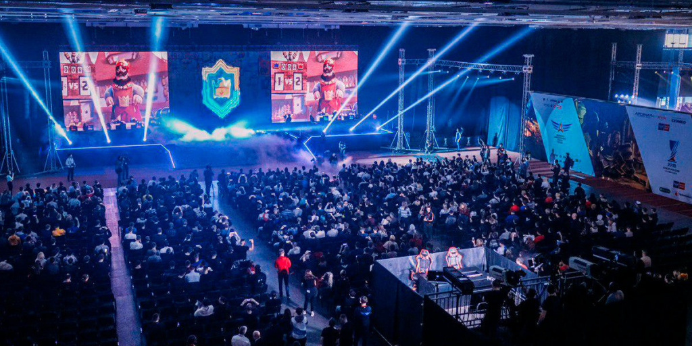
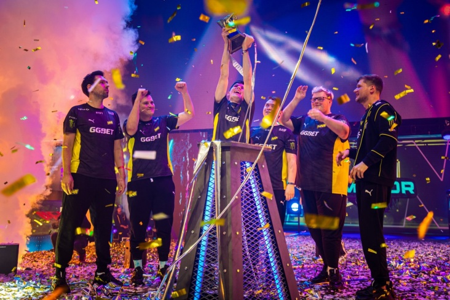
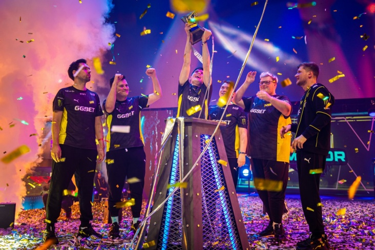

Перспективы киберспорта
Мировой киберспорт развивается параллельно с компьютерными технологиями. Любительские турниры переросли в профессиональные Лиги. Крупные международные чемпионаты проводят на живых стадионах, а призовой фонд в 1 млн. долларов уже далеко не редкость. Многие страны, такие как Южная Корея, США и Россия, приравнивают виртуальный спорт к традиционным видам. По этому же пути уже идет и ряд других стран в Европе и Азии.
В 2018 году Международный Олимпийский комитет официально признал киберспорт.
В 2022 году в России утвердили государственный стандарт по подготовке киберспортсменов, по которому, игроки должны уделять время не только тренировкам на компьютере, но и физической подготовке. Предполагается, что она будет занимать от 25 до 40 % общего тренировочного процесса.
В 2024 году в Казани планируется проведение турнира «Игры будущего» по фиджитал-спорту, который представляет собой совмещение киберспорта с традиционным. В программе 15 дисциплин гибридного формата, которые соединят в себе традиционный спорт и киберспорт. Примером фиджитал-спорта может является гибридный футбол – поочередная игра в футбольный симулятор и реальный футбольный матч на поле, победитель же определяется по сумме очков в двух видах игры.
Мировое признание
Киберспорт переживает свой золотой век. Быстрый рост популярности, внимание киберспортивных событий и призовые фонды делают эту индустрию одной из самых динамично развивающихся в мире. Давайте взглянем на несколько перспектив этого захватывающего мира.
Аудитория киберспорта стремительно растет. Миллионы фанатов по всему миру следят за турнирами, а стриминговые платформы, такие как Twitch и YouTube Gaming, становятся основными источниками просмотра. Этот рост привлекает внимание крупных спонсоров и инвесторов, что дальше стимулирует развитие отрасли.
Киберспорт переходит на новый уровень профессионализма. Команды нанимают тренеров, аналитиков и физиотерапевтов, чтобы обеспечить своим игрокам оптимальные условия для тренировок и выступлений. Вместе с этим растет и конкуренция, и, как следствие, качество игры.
Турнирная сцена киберспорта становится все более разнообразной и многообразной. От классических дисциплин, таких как Dota 2 и Counter-Strike, до новаторских игр вроде Valorant и Rocket League, турниры привлекают игроков и зрителей различных предпочтений.
Киберспорт все чаще признается как официальный вид спорта, что открывает двери для участия на международном уровне и привлекает внимание со стороны Олимпийского комитета и других спортивных организаций.
 

Заключение
Киберспорт входит в новую эру своего развития, и его перспективы впечатляют. Со стабильным ростом аудитории, профессионализма и турнирной сцены, а также влиянием технологий и мировым признанием, киберспорт остается одним из самых захватывающих и перспективных направлений современной спортивной индустрии.